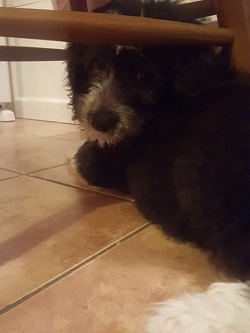
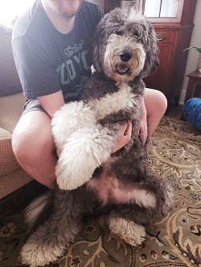
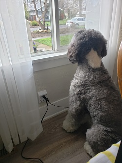

🐾Sheepadoodle History: The Breed and Baloo🐾
Fun Facts about Sheepadoodles
Sheepadoodles are a very rare breed, but have started to become popular among the mix of "doodle" breeds.
Sheepadoodles are a designer breed that is made of a combination of an Old English Sheepdog and a Standard
Poodle. They are knwon for their loving and caring attitudes towards their owners and strangers. They also
a dog breed that rarely sheds. If they do shed, it'll mostly be after a haircut. Sheepadoodles come in a
variety of colors and are mixed with black, brown, grey, white and even red sometimes (black & white is the most
common). Sheepadoodles have a very long life expectancy, which is estimated to be around 12 to 15 years.
They are also a very active dog breed. They love going for walks, playing tug-o-war, and sometimes, hide-n-seek.
Credit to https://animalso.com/breeds/sheepadoodle/



Brief History of Baloo
Baloo has come along away and has had many adventures. Baloo was born on June 28, 2015, making him
5 years in June! He has grown up with a loving family and continues to be loved everyday. When Baloo
was just a puppy, he was bought by Jacob's girlfriend's brother at only a few months. He was a little monster
that loved to chew on every thing (furniture, socks, other dogs toys). You name it he most likely tried to chew
it. But as he grew up, Jacob's girlfriend's brother wasn't able to keep him and at some point he was handed over
to Jacob's girlfriend. He basically became Jacob's step-"child". Baloo loves being around people and always
needs to say hi to every person he sees no matter how far away they are. He has learned some tricks throughout
his life and continues to surpise everyone with how gentle he is as well as big, basically just a gentle giant.
For more information on Sheepadoodles:
If you want to find more information about Sheepadoodles such as price or just to look at,
you can click here on this link, which will also show you where Baloo was bred!